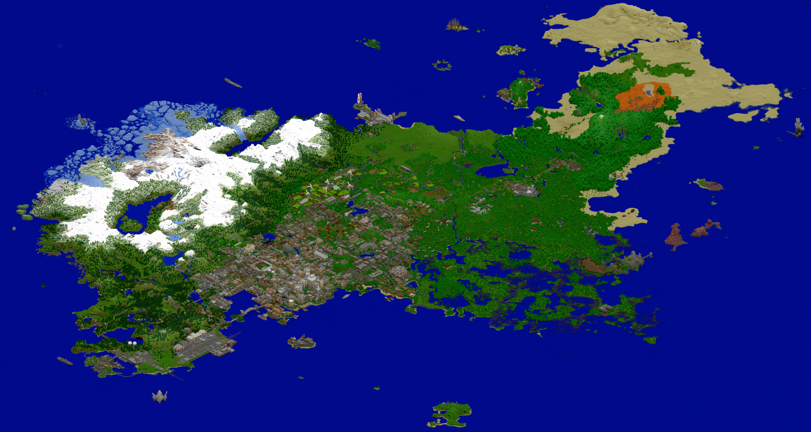

Broville v11
A new world begun in 2012 and completed in 2016, containing the places, books, and missions covered by this encyclopedia.


A new world, 2012–2016
In February 2014, Oldshoes explained on the Minecraft Forum that work had begun in August 2012 on a new world to take advantage of terrain generation and large biomes. At the time, he estimated that v11’s urban area alone was nearly twice the size of the entire v10 map. The demo released that month showed part of the project. The announcement already promised distinct neighborhoods, automated transport, books, custom equipment, and hidden complexes.
The v11 page on Planet Minecraft opened in March 2013 and records development from before the demo. The pages for the two editions place completion in November and December 2016, respectively. The changelog records v11.1 on December 8, while the December 14 Minecraft.net feature reports that completion and distribution had been announced the previous week. According to the interview and Oldshoes’s credits, the team brought together more than 60 contributors.
Shaping the territory
Terrain and climate
In the Minecraft.net interview, Oldshoes identified Victoria, British Columbia, as an approximate reference for geography and climate. Some of the terrain was generated by the game. In the mountains, the team piled up stone, sculpted the masses with Voxel Sniper, and set the transition from grass to snow using the default cloud height. Oldshoes described manually adjusting biomes and using the server’s weather to accumulate snow in selected areas.
City, underground, and region
- Urban center. The green line connects Museum to Brocorp Station. The red line runs through Brocorp and Canals East, connecting to the blue line serving Brompton. Names and connections come from the package’s Metro Map.
- Old infrastructure. Traces of the Black Line survive on Mid Side Station signs and beneath the canals area. A Mid Side sign was inventoried at X −328, Y 66, Z 1802. Signs in the world complement the diagram of the operating metro when investigating this network.
- Region. The regional railway map links the Coal Mine and Nuclear Plant area to the port, continuing through Braulding, Portvale, and Fort Bulwark. On the Road Map, the asylum appears in E8, north of SOLAR.
Exploration leaves a record
Oldshoes’s announcement lists more than 800 buildings and highlights interiors, redstone mechanisms, and custom objects. These features occur at different scales. A BrownTech catalog offers a Compass T4-80 computer for 199.99, while the BVPS diaries let visitors follow an expedition through the asylum. Brian Garlick’s record, dated August 10, 1998, connects portal experiments to SOLAR’s crisis. One copy of this book occurs at X −261, Y 81, Z 2012 in v11.4.4.
The local inventory of that edition contains 638 book occurrences and 319 distinct combinations of title, author, and pages. Copies may repeat the same text in multiple places. An inventory coordinate identifies the observed occurrence, helping distinguish the place of discovery from the place described by the narrator.
Editions and maintenance
- v11.1, December 2016. The changelog records fixes to the Museum of Natural History and Old Town Station signage, together with a revised road map and a district map. The site catalogs this edition for Minecraft 1.10.2.
- v11.2, July 2022, and v11.3, June 2023. The former migrated the world to 1.19, crediting Xeraction. The latter moved to 1.20 and fixed, among other issues, a failure when generating new chunks and the End teleporter’s particles.
- v11.4 series, 2024–2026. The July 2024 update moved the map to 1.21 and restored mechanisms and puzzles. In October, v11.4.2 adjusted maps and restored guardians in the Oriental Casino. v11.4.3 updated commands in October 2025. v11.4.4, released March 24, 2026 for Minecraft 26.1, updated the world format and fixed entity textures.
Which copy supports each reading
The link Oldshoes presents on Planet Minecraft as the original release for Minecraft 1.10 leads through AdFoc.us to a MediaFire page titled Broville v11.1, with the file Broville_v11.1.zip. This chain confirms that the early revision is being offered. The build preceding the December 8 changelog still needs to be identified and compared. The books and coordinates cited here come from v11.4.4 and should be read with that edition in mind.
See also
Sources and references
- Broville · Oldshoes Production
- Oldshoes on the beginning of v11 · Minecraft Forum Production
- Welcome to Broville · Marsh Davies’ interview with Oldshoes, December 14, 2016 Interview
- Broville v11 · Oldshoes’ release page and update logs Production
- Broville v11.1 · package identified by Oldshoes as the Minecraft 1.10 edition Distribution
- Local v11.4.4 inventory · current_books.json and package maps Local archive
- BT Catalog, BVPS diaries and Final Notes · occurrences in v11.4.4 World books